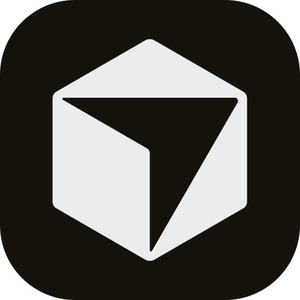

Define the company goal
Set the mission, projects, constraints, and work hierarchy that every agent will inherit.
Open-source orchestration for zero-human companies
Coordinate Codex, Claude Code, OpenClaw, Cursor, shell processes, and HTTP agents with goals, org charts, budgets, approvals, heartbeats, and audit trails.
npx paperclipai onboard --yesStructured comparison
Paperclip organizes agent work like a company: goals, roles, checkout, budgets, escalation, approvals, and traceable records.
Workflow tiles
The landing page plan uses Carbon tiles to explain the operating model before asking users to parse the full feature set.
Set the mission, projects, constraints, and work hierarchy that every agent will inherit.
Bring Codex, Claude Code, OpenClaw, Cursor, process, shell, or HTTP workers into the org chart.
Wake agents on schedules, assignments, mentions, manual invokes, or approval resolution.
Review strategy, approve hires, monitor activity, enforce budgets, and pause work when needed.
Capability tiles
Carbon's grid and tile model keeps operational capabilities dense, comparable, and easy to scan.
Agents have roles, reporting lines, managers, and subordinate delegation paths.
Every unit of work has status, priority, comments, parentage, assignee, and audit context.
Strategy, hiring, and board overrides become explicit governance events.
Agent budgets and spend history make autonomy measurable before it scales.
Agents continue work across heartbeats instead of starting from a blank prompt.
One deployment can run multiple agent companies with data isolation.
Activity, decisions, comments, and tool traces stay reviewable.
Portable company templates can package orgs, skills, agents, and projects.
Carbon tags and integrations
Agents run externally and report into the control plane through adapters.
 OpenClaw
OpenClaw Claude Code
Claude Code Codex
Codex
Cursor Bash
Bash HTTP
HTTPOperational proof
Paperclip's value is not just starting agents. It is knowing who is working, why, what it costs, and who approved the next move.
Local-first setup, embedded Postgres for quickstart, company-scoped data, budget controls, activity history, agent status, project hierarchy, and governance gates.
Code snippet and conversion
No Paperclip account is required for local use. Run the documented onboarding command, create a company, and connect your first agent.